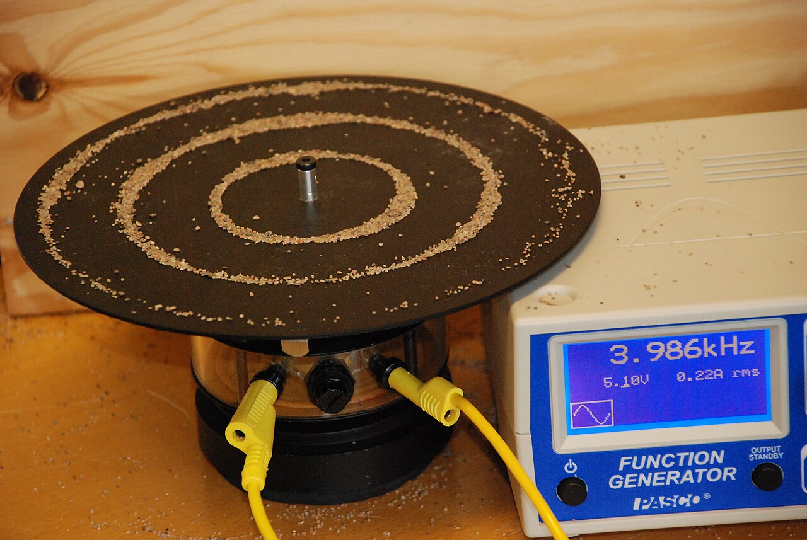
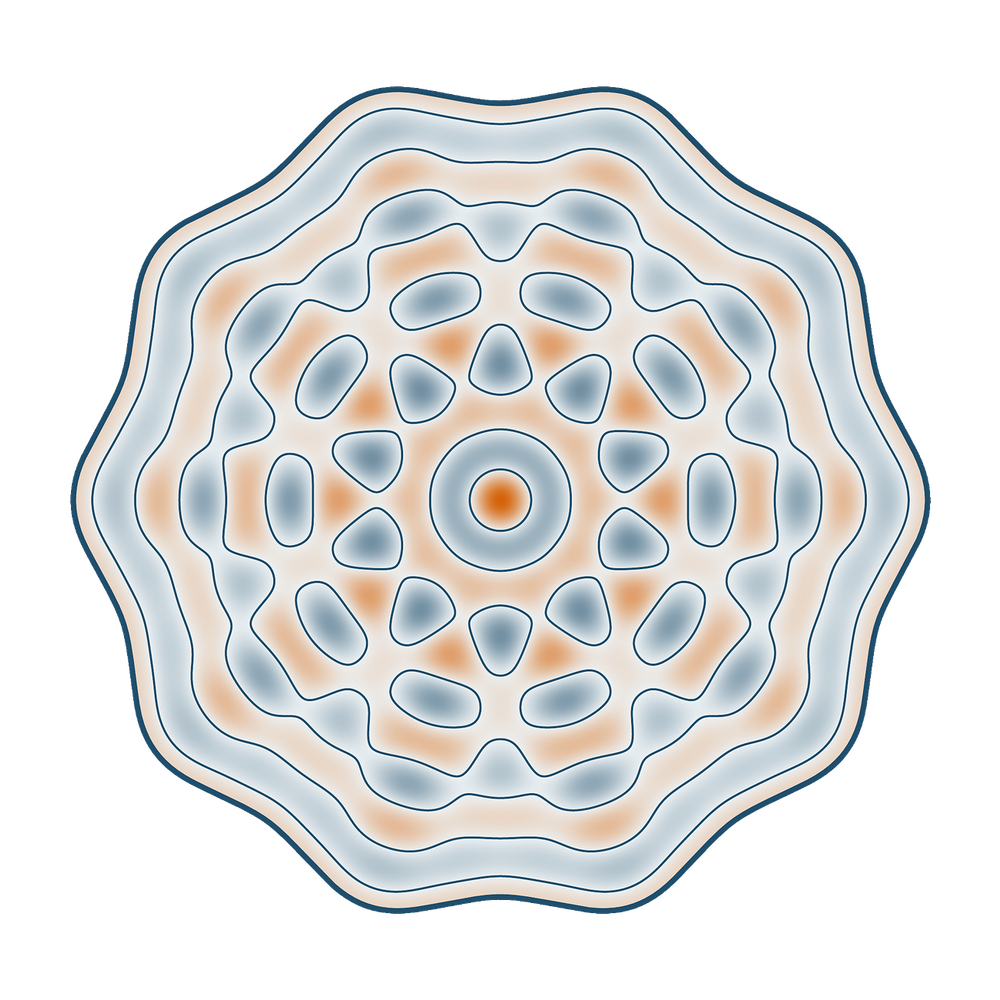
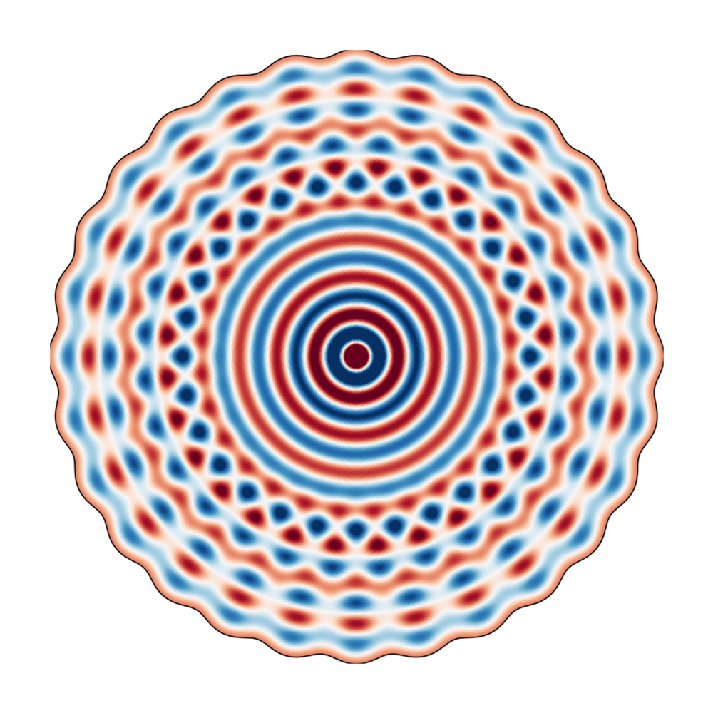
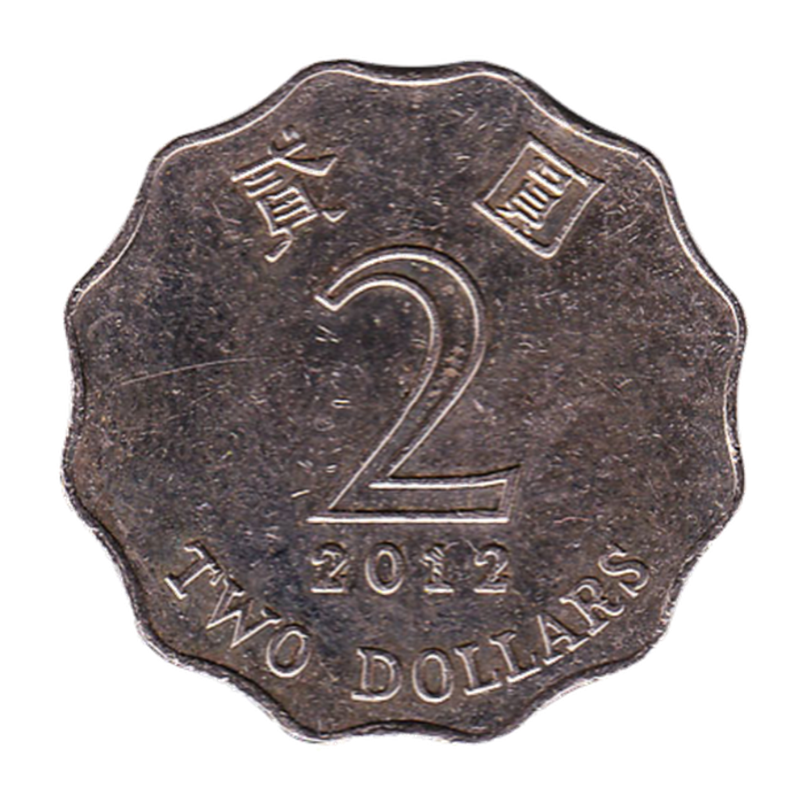
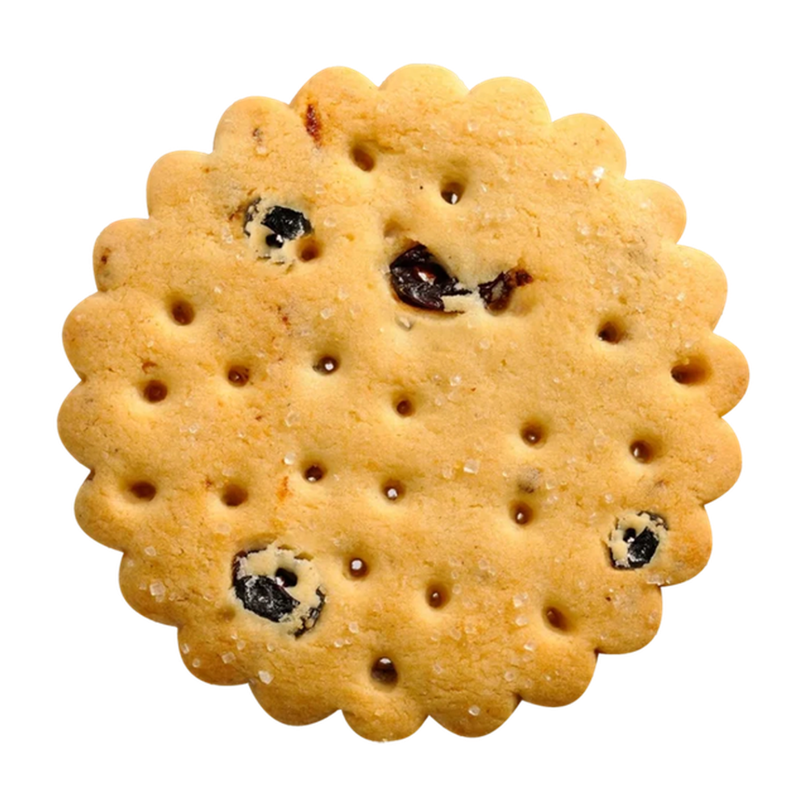
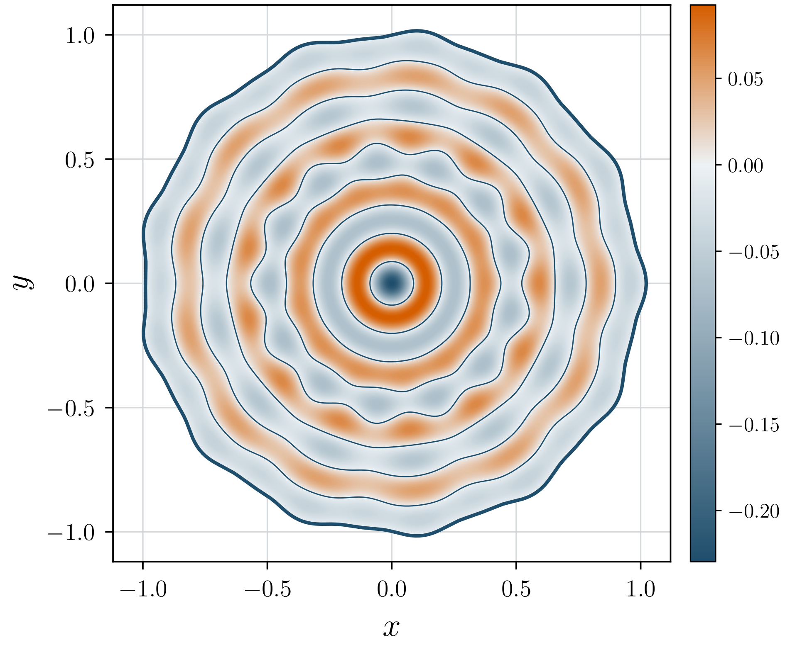
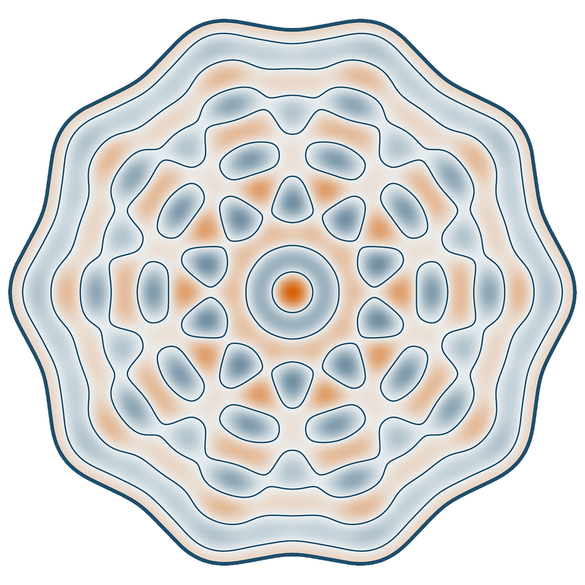

A non-disk planar Schiffer domain exists.
There is a bounded, smooth, simply connected planar domain, star-shaped with respect to the origin, which is not a disk and solves the Schiffer problem.
Based on A computer-assisted counterexample to the planar Pompeiu and Schiffer conjectures, Counterexamples to Schiffer’s Conjecture, and A computer-assisted counterexample to the planar Berenstein conjecture. Acknowledgements.
There is a bounded, smooth, simply connected planar domain, star-shaped with respect to the origin, which is not a disk and solves the Schiffer problem.
Let \(\Omega\subset\mathbb R^2\) be a bounded domain. Pompeiu asked whether a function \(f\) is determined by its integrals over all rigid motions \(E(\Omega)\). Williams showed that nonuniqueness occurs exactly when \(\Omega\) supports a nonconstant Laplace eigenfunction whose value is constant and whose normal derivative vanishes on \(\partial\Omega\). The disk is the classical example, and Schiffer conjectured that it is the only connected smooth planar one.
We explain two constructions that both combine geometry, spectral analysis, and bifurcation. In the conformal fixed-disc route, a higher tenfold Wronskian crossing supplies a linearized kernel direction for a numerical search in the relaxed constant-flux problem. Numerical continuation follows a computed noncircular branch to zero flux and encodes the endpoint by a conformal map from the unit disk; a computer-assisted contraction, independent of the search path, then proves that an exact solution lies near that numerical centre. The real-order bifurcation route writes an \(N\)-fold problem on a fixed boundary collar, allows the order \(N\) to become a real parameter \(R\), and uses uniform bifurcation theory and Bessel asymptotics to bend a branch to an integer, where it unfolds into the plane.
Suppose that you are designing a probe to measure a physical quantity that varies across a sample: its temperature, its local composition, or the roughness of its surface. One choice in the design is the probe's footprint \(\Omega\), the region over which it takes a reading. Physical limitations prevent the instrument from measuring the field at a single point, so it returns an average over this footprint. You want to choose \(\Omega\) so that these averaged measurements retain as much information as possible.
Once the footprint has been chosen, suppose that you may translate and rotate the probe and take as many readings as you wish. Given a rigid motion \(E\), we denote by \(E(\Omega)\) the transformed footprint. If the unknown field is \(f\), we model the reading in the configuration given by \(E\) as
Pompeiu asked in 1929 whether the collection of all these readings determines the unknown field. Mathematically, this asks whether the map \(f\mapsto M_\Omega f\) is injective.
A bounded set \(\Omega\) has the Pompeiu property when \(f\mapsto M_\Omega f\) is injective. Since \(M_\Omega\) is linear, this is equivalent to saying that, for every function \(f\),
Does every bounded planar set have the Pompeiu property?
Chakalov showed in 1944 that the answer is no: every disk fails to have the Pompeiu property. Rotational symmetry makes the loss of information plausible, since rotating a disk produces no new footprint. Concretely, on the disk of radius \(r\) the plane wave \(\cos(\sqrt\lambda\,x_1)\) has integral zero over every rigid motion of it precisely when \(\sqrt\lambda\,r\) is a zero of \(J_1\), the Bessel function of the first kind of order one.
These figures are interactive: drag the highlighted set to move its centre, and use the slider to change its size.
A one-dimensional model
Let \(I_L=[-L/2,L/2]\) and \(f(x)=\cos x\). For the translate \(I_L+t\), direct integration gives
Hence \(I_{2\pi}\) fails the one-dimensional Pompeiu property: the nonzero function \(\cos x\) belongs to the kernel for every translation. The panel below plots this identity as \(t\) and \(L\) vary.
A two-dimensional model
Let \(B_r\) be a disk of radius \(r\), and let \(\rho_\star>0\) be a zero of \(J_1\). Then
is nonzero and satisfies \(\int_{E(B_r)}f(x)\,dx=0\) for every rigid motion \(E\). Rotations give no additional domains because \(B_r\) is rotationally invariant.
The margin experiment fixes \(f(x)=\cos(x_1)\) and varies the disk around the first positive zero \(r=3.8317\ldots\) of \(J_1\).
Translation of the disk gives a convolution:
The Fourier transform turns convolution into multiplication, and
Take \(f(x)=\cos(\sqrt\lambda\,x_1)\). Its Fourier transform is supported at the two frequencies \(\xi=\pm\sqrt\lambda\,e_1\). If \(\sqrt\lambda\,r=\rho_\star\), where \(J_1(\rho_\star)=0\), then \(\widehat{\mathbf 1_{B_r}}\) vanishes at both frequencies. Therefore
Thus the convolution \(\mathbf 1_{B_r}*f\) vanishes identically. Rotational invariance of the disk completes the proof. □
Finite disjoint unions of congruent disks give further examples. A function whose integral vanishes over every moved disk also has integral zero over every moved copy of such a union. We shall therefore consider connected smooth bounded domains. The modern Pompeiu conjecture asserts that, in this class, only disks fail to have the Pompeiu property.
A normal vibrational mode of a scalar membrane has the form \(w(x,t)=u(x)\cos(\sqrt\lambda\,t)\), where the spatial profile satisfies \((\Delta+\lambda)u=0\). The Neumann condition \(\partial_\nu u=0\) describes a reflecting boundary. Schiffer asked for domains carrying a nonconstant normal mode whose value is constant along the boundary. After rescaling the mode, the problem is

A domain \(\Omega\) for which the system has a solution is called a Schiffer domain. The disk is one: its radial modes are multiples of \(J_0(\sqrt\lambda\,r)\), and their normal derivative vanishes at the boundary precisely when \(\sqrt\lambda\,r\) is a zero of \(J_0'\) — equivalently of \(J_1\), since \(J_0'=-J_1\).
Equivalently, the boundary condition can be written as \(\nabla u=0\). Indeed, constancy of \(u\) along the boundary kills every tangential derivative, while \(\partial_\nu u=0\) kills the normal component. Together they make the full gradient vanish on \(\partial\Omega\). One may also normalize \(\lambda=1\), which costs nothing: if \((u,\lambda)\) solves the system on \(\Omega\), then \(x\mapsto u(x/\sqrt\lambda)\) solves it with eigenvalue \(1\) on the rescaled domain \(\sqrt\lambda\,\Omega\). Fixing the domain and varying \(\lambda\), as the rest of this site does, is the same problem read the other way round.
Every connected smooth bounded planar Schiffer domain is a disk.
Radial Neumann eigenfunctions
The applet illustrates the corresponding radial nodal patterns. The shallow surface and radial trace evaluate the scalar membrane modes \(J_0(\rho_n r)\cos(\rho_n t)\) appearing in Schiffer's equation, with \(J_1(\rho_n)=0\).
In both problems the disk produced the same arithmetic condition: the frequency times the radius must be a zero of \(J_1\). That coincidence is not an accident, and Williams made it precise.
Let \(\Omega\subset\mathbb R^2\) be a bounded, simply connected domain with smooth boundary. Then the following statements are equivalent:
Consequently, a smooth noncircular solution of the Schiffer problem also gives a smooth noncircular probe without the Pompeiu property.
A Schiffer domain fails the Pompeiu property. Let \((u,\lambda)\) solve the Schiffer system on \(\Omega\), and let \(f\) be any solution of \(\Delta f+\lambda f=0\) on the whole plane (the plane wave \(f(x)=\cos(\sqrt\lambda\,x_1)\) will do). Fix a rigid motion \(\sigma\) and write \(\Omega_\sigma=\sigma(\Omega)\), \(u_\sigma=u\circ\sigma^{-1}\), which solves the same system on \(\Omega_\sigma\). Green's second identity reads
The left-hand side vanishes since \(\Delta f=-\lambda f\) and \(\Delta u_\sigma=-\lambda u_\sigma\) (because the Laplacian respects rigid motions). On the right-hand side the boundary conditions \(u_\sigma=1\) and \(\partial_\nu u_\sigma=0\) collapse the integrand to \(\partial_\nu f\). Hence
the middle step being the divergence theorem. Since \(\lambda>0\), the integral of \(f\) over \(\Omega_\sigma\) is zero, and \(\sigma\) was arbitrary. The plane wave is a Pompeiu counterexample for \(\Omega\). □
A domain failing the Pompeiu property is a Schiffer domain. Suppose \(\Omega\) fails the Pompeiu property, witnessed by a nonzero function \(f\). Run the convolution argument above on each rotated copy \(\sigma(\Omega)\), with \(\sigma\) a rotation about the origin, and use \(\widehat{\mathbf 1_{\sigma(\Omega)}}(\xi)=\widehat{\mathbf 1_{\Omega}}(\sigma^{-1}\xi)\). Picking any \(\xi_0\) in the support of \(\widehat f\) and letting \(\sigma\) run over all rotations shows that \(\widehat{\mathbf 1_\Omega}\) vanishes on the entire circle \(|\xi|=|\xi_0|\), and that circle is not a point since \(\widehat{\mathbf 1_\Omega}(0)=|\Omega|>0\).
Now, take \(\lambda=|\xi_0|^2\). Since \(\widehat{\mathbf 1_\Omega}\) vanishes at \(|\xi|^2=\lambda\), we divide it by \((\lambda-|\xi|^2)\), which is the Fourier symbol of \(\Delta+\lambda\). Consider1
We have that \(v\) solves \((\Delta+\lambda)v=1\) inside \(\Omega\) and \((\Delta+\lambda)v=0\) outside. The regularity of \(v\) in Fourier1 implies that it decays in physical space. Together with \((\Delta+\lambda)v=0\), this allows us to propagate \(v=0\) from infinity to the exterior of \(\Omega\) (recall here that \(\Omega\) is simply connected). Thus, \(v\) is compactly supported in \(\overline\Omega\), and satisfies \((\Delta+\lambda)v=1\). The decay of \(v\) in Fourier space tells us that \(v\) is \(C^1\), so that \(v|_{\partial\Omega}=0\) and \(\partial_\nu v|_{\partial\Omega}=0\).
Lastly, considering \(u=1-\lambda v\), we see that it satisfies \((\Delta+\lambda)u=0\), as well as \(u|_{\partial\Omega}=1\) and \(\partial_\nu u|_{\partial\Omega}=0\). It is not constant, since a constant solution of \((\Delta+\lambda)u=0\) with \(\lambda>0\) vanishes identically. □
Williams’ theorem lines up two conditions on \(\Omega\). Two more belong on the same list, one in harmonic analysis and one in shape optimization, so the disk question can be asked in four equivalent ways.
A Fourier zero set. Brown, Schreiber and Taylor [5] reduced the Pompeiu property to a condition on a single function: \(\Omega\) fails it exactly when \(\widehat{\mathbf 1_\Omega}\) vanishes identically on some circle \(|\xi|=\sqrt\lambda\) centred at the origin. This is the condition we already met in the proof above, where the rotation argument turned a Pompeiu counterexample into a circle of zeros of \(\widehat{\mathbf 1_\Omega}\); the converse runs the same computation backwards. Indeed, changing variables writes \(\int_{\sigma(\Omega)}\cos(\sqrt\lambda\,x_1)\,dx\) as an integral of \(\cos(\xi\cdot x+c)\) over \(\Omega\) itself, where \(\xi\) is the rotation of \(\sqrt\lambda\,e_1\) and \(c\) is a constant coming from the translation. Expanding the cosine, this is a combination of the real and imaginary parts of \(\widehat{\mathbf 1_\Omega}(\xi)\), so it vanishes for every rigid motion \(\sigma\) exactly when \(\widehat{\mathbf 1_\Omega}\) vanishes on the whole circle \(|\xi|=\sqrt\lambda\).
A critical point. Fix a smooth bounded \(\Omega\) with connected boundary, a simple Neumann eigenvalue \(\mu>0\), and its eigenfunction \(u\) normalized by \(\int_\Omega u^2=1\). Deform \(\Omega\) while keeping its area fixed. Then \(\mu\) is stationary under every such deformation precisely when \(u\) is constant on \(\partial\Omega\) (which is the Schiffer system above). Schiffer domains are the critical points of a Neumann eigenvalue under a volume constraint, and Schiffer's question asks whether the disk is the only one.
Deform with normal velocity \(f=V\cdot\nu\) on \(\partial\Omega\). The Hadamard formula for a simple Neumann eigenvalue [9, Section 2] is
On \(\partial\Omega\) the Neumann condition \(\partial_\nu u=0\) leaves only the tangential part of the gradient, and if \(u\equiv c\) on the boundary then that part vanishes too. What is left is
which is zero for every area-preserving deformation. The constant \(c\) is not zero: if it were, \(u\) and \(\partial_\nu u\) would both vanish on \(\partial\Omega\) and unique continuation would force \(u\equiv0\). □
The Schiffer system prescribes complementary Cauchy data on the boundary: \(u=1\) and \(\partial_\nu u=0\). The planar Berenstein conjecture asks about the switched endpoint data
A computer-assisted counterexample to the planar Berenstein conjecture, by Matthew J. Colbrook, Siavash Sadeghi and George Stepaniants, constructs a bounded simply connected non-disc with real-analytic boundary and a sign-changing eigenfunction satisfying these data. Thus the unrestricted conjecture is false; rigidity versions that impose a sign condition on \(u\) are not contradicted by this example.
One reason to expect Schiffer's conjecture to hold is that the disk is rigid at the formal, infinitesimal level: every linearized deformation through Schiffer solutions comes from a translation or a dilation, and therefore produces no nearby noncircular domain.
Consider \(\Omega,u,\lambda\) solving the Schiffer problem, and suppose we have another solution close by, with eigenfunction \(u+\delta u\) and domain \(\Omega+\delta\Omega\,\nu\), where \(\delta\Omega\colon\partial\Omega\to\mathbb R\) measures the small perturbation in the normal direction illustrated in . We keep \(\lambda\) fixed, since dilations can always restore it.
Then, if we impose that \((u+\delta u,\ \Omega+\delta\Omega\,\nu)\) also solves Schiffer, at the linear level we read:
The crucial observation now is that the first two equations tell us that \(\delta u\) is a Dirichlet eigenfunction of the Laplacian, with the same eigenvalue \(\lambda\). The third equation then gives the perturbation of the boundary in terms of that Dirichlet eigenfunction, using \(\partial_\nu^2u|_{\partial\Omega}=-\lambda\).
Suppose \((u,\Omega)\) is a Schiffer example, so in particular \(u\) is a Neumann eigenfunction with eigenvalue \(\lambda\). The linearized system admits a nontrivial deformation when \(\lambda\) is also a Dirichlet eigenvalue.
Its Dirichlet eigenfunction \(\delta u\) supplies the field variation, while the boundary moves with normal velocity \(\delta\Omega=\partial_\nu\delta u/\lambda\).
For the unit disk, this criterion reduces to a statement about zeros of Bessel functions.
If \(m\) and \(n\) are distinct nonnegative integers, then \(J_m\) and \(J_n\) have no common positive zero. Equivalently,
Indeed, a radial Schiffer mode on the disk has \(J_1(\rho)=0\), while a Dirichlet variation in angular mode \(\ell\) would require \(J_\ell(\rho)=0\) at the same \(\rho\). Siegel's theorem excludes every \(\ell\ge2\). The remaining mode \(\ell=1\) is the derivative of the radial solution under translation, so it does not produce a new domain. Thus the disk has no genuine nonradial direction for this linearized construction.
The expansion. Impose the Schiffer system on the perturbed pair. The interior equation is already linear in \(u+\delta u\). The two boundary conditions are imposed on \(\partial\Omega'\), whose points are \(p+\delta\Omega(p)\,\nu(p)\) with \(p\in\partial\Omega\), so reading them back on \(\partial\Omega\) costs one Taylor step along the normal:
where l.o. collects everything at least quadratic in \((\delta u,\delta\Omega)\). Now we use that \((u,\Omega)\) already solves the problem. On the second line \(u|_{\partial\Omega}=1\) cancels the right hand side and \(\partial_\nu u|_{\partial\Omega}=0\) kills the term carrying \(\delta\Omega\), leaving \(\delta u|_{\partial\Omega}=0\); on the third line the same Neumann condition removes the first term. Discarding l.o. gives the linearized system above.
The small computation. At a boundary point, split the Laplacian into its normal, mean-curvature and tangential parts,
The Neumann condition \(\partial_\nu u=0\) kills the second term, and \(u\equiv1\) on \(\partial\Omega\) kills the third. Hence \(\partial_\nu^2u=\Delta u=-\lambda u=-\lambda\) there, and the third linearized equation reads \(-\lambda\,\delta\Omega+\partial_\nu\delta u=0\), that is, \(\delta\Omega=\partial_\nu\delta u/\lambda\).
The trivial solutions. The linearized system always has solutions that carry no information, because the Schiffer problem is blind to rigid motions and to scaling. Take for \(\Omega\) the unit disk \(D\), with \(u_0(r)=J_0(\rho r)/J_0(\rho)\) and \(\lambda=\rho^2\), where \(J_1(\rho)=0\). Translating gives an exact family of solutions, \(\Omega_t=D+ta\) with \(u_t(x)=u_0(x-ta)\) and \(\lambda_t=\rho^2\); differentiating it at \(t=0\) produces
Dilating gives another one, \(\Omega_t=(1+ct)D\) with \(u_t(x)=u_0\!\left(x/(1+ct)\right)\) and \(\lambda_t=\rho^2/(1+ct)^2\), whose normal velocity is the constant \(\delta\Omega(\theta)=c\); here the eigenvalue has to move, because the Laplacian scales like the inverse of a length squared. Rotating contributes nothing at all: the velocity is tangent to the circle, so \(\delta\Omega=0\).
A genuinely new Schiffer domain must therefore produce a \(\delta\Omega\) outside the span of \(\{1,\cos\theta,\sin\theta\}\), and near a disk there is none. Expanding \(\delta u\) in angular modes, the mode \(\ell\) survives only if \(J_\ell(\rho)=0\) on top of \(J_1(\rho)=0\), and the Bourget–Siegel theorem says that two Bessel functions of distinct integer order share no positive zero. So every \(\ell\ge2\) dies, \(\ell=1\) is a translation and \(\ell=0\) is a dilation: the disk is rigid, and this is the obstruction Siegel's theorem provides. □
The linearized obstruction is only the beginning; a substantial rigidity literature confirms the conjecture whenever extra information is available. If \(\lambda\) sits low in the Neumann spectrum the disk is forced: for simply connected planar domains, being among the seven lowest Neumann eigenvalues suffices [18][19], and the range widens for centrally symmetric convex domains. Berenstein proved rigidity from the opposite extreme, assuming infinitely many orthogonal Neumann eigenfunctions that are constant on the boundary [20]. A condition on the eigenfunction itself also suffices: Willms and Gladwell showed that if \(u\) has no saddle points, then a simply connected planar domain must be a disk [23].
Regularity results say that a counterexample cannot hide in a rough domain. Kinderlehrer and Nirenberg's free-boundary theorem makes \(u\) and \(\partial\Omega\) real-analytic [21], and in the planar Pompeiu setting Williams showed that a bounded Lipschitz counterexample with connected boundary already has real-analytic boundary [22]. Any counterexample is therefore as smooth as one could ask, which is why the constructions below produce analytic boundaries rather than merely continuous ones.
The linearization in this section tells us what to look for: a radial Schiffer eigenvalue that is also a nonradial Dirichlet eigenvalue. The Bourget–Siegel theorem rules this out for the exact Schiffer problem on a disk. Nearby problems become flexible if we change the ambient geometry, the topology, or one of the boundary conditions. The diagrams below move along the resulting branches, with the symmetric domain at \(s=0\).
In the first three examples, changing the geometry or topology allows the two eigenvalues to meet. Wheeler’s planar result instead keeps a simply connected domain in the plane and allows the constant normal derivative to be nonzero. His theorem constructs branches from the smallest Wronskian roots. The first route uses the same linearized mechanism at a higher tenfold crossing as a numerical seed, then continues a computed branch to the zero-flux centre that is validated independently.
Fall, Minlend and Weth work on the full cylinder \(\mathbb{R}\times S^1\) and take as domain a band of length \(a\), carrying a radial Neumann eigenfunction across its length. Separation of variables gives
with \(u_0\) the radial Schiffer eigenfunction whenever the Neumann condition cancels at the two ends, and \(v_1\) the nonradial Dirichlet mode. On the band both conditions are quantization conditions on \(a\), so the two eigenvalues agree only at isolated lengths. As \(a\) varies they cross once, at width-to-circumference ratio \(\sqrt3/2\) and \(\lambda=4/3\), and it is at that single critical length that a nonradial branch appears. Both boundary loops then pick up a \(\cos x\) wave, and their principal curvatures stop being constant — the first Schiffer domain in a space of constant curvature whose boundary is not isoparametric. They also obtain non-contractible examples on the round sphere, bifurcating from bands around the equator, which disproves a conjecture of Souam.
Fall–Minlend–Weth, JEMS (2025) ↗Relax the problem to domains that are not contractible, and let the eigenfunction take a different constant on each component of the boundary — one value on the outer curve, another on the inner one. Enciso, Fernández, Ruiz and Sicbaldi show that this weaker condition no longer forces a disk or an annulus: they construct doubly connected domains carrying a nonradial eigenfunction whose gradient vanishes on the whole boundary.
The branch leaves the annulus \(\{a<r<1\}\) at the second nonconstant radial Neumann mode, where its eigenvalue meets the first Dirichlet eigenvalue of angular mode \(l\). That crossing exists for every \(l\ge4\); at \(l=4\) it sits at \(a=0.140989\). Both curves ripple as \(\cos4\theta\) and the domain thickens where the cosine is positive, but the outer curve carries almost all of the motion, with about twenty-eight times the amplitude of the inner one.
Enciso–Fernández–Ruiz–Sicbaldi, Duke (2025) ↗Cao-Labora and Fernández bifurcate from the north-pole disk \(\cos\theta>a_*\), where \(a_*\approx0.477\). Its boundary lies strictly north of the equator. The slider displays the expansion \(\theta(\phi;s)=\arccos(a_*)+s b_*\cos(8\phi)+o(s)\); the amplitude is enlarged so that the eight-fold term is visible.
Cao-Labora–Fernández (2025) ↗Wheeler keeps the plane, simple connectivity, and the constant boundary value \(u=1\), but replaces Schiffer’s zero-flux condition by \(\partial_\nu u=c\ne0\). For every integer \(m\ge4\), he proves a real-analytic \(m\)-fold branch leaving the disk at the smallest positive root of \(W_{1,m}\) [24].
The picture shows the leading \(m=10\) conformal motion \(\phi_\varepsilon(z)=z+\varepsilon z^{11}+O(\varepsilon^2)\), enlarged so that the ten-fold shape is visible. The arrows remain equal because the normal derivative is constant along the boundary; their length is schematic. Since this constant stays nonzero near Wheeler’s branch, these are not yet Schiffer examples. The Wronskian mechanism nevertheless supplies the starting direction for the numerical search below.
Wheeler (2025) ↗
Conformal fixed-disc route
A \(D_{10}\)-symmetric example A higher-root tenfold kernel and numerical continuation produce the centre; a computer-assisted fixed-disc certificate proves the exact example.
Real-order bifurcation route
A numerical \(D_{28}\) realization An informal numerical illustration of the pattern predicted by the asymptotic proof.A visual comparison
The resemblance is geometric: no Schiffer or Pompeiu property is asserted for either object.


The two planar constructions now proceed differently, although both use bifurcation. The conformal fixed-disc construction follows a bifurcating relaxed constant-flux family to locate a precise zero-flux candidate, then uses rigorous fixed-point bounds to prove that an exact solution lies nearby. The real-order construction poses the moving-boundary problem on a fixed collar, bifurcates at a noninteger Bessel crossing, and proves that a uniformly controlled branch bends until its order reaches an integer.
The field at left depicts the certified \(D_{10}\)-symmetric solution obtained by the conformal fixed-disc construction. The field at right is a \(D_{28}\)-symmetric numerical realization of the real-order bifurcation mechanism. In both cases the picture is an illustration: the rigorous conclusions come from a validated coefficient-space contraction and from uniform analytic bifurcation with Bessel asymptotics, respectively. In both pictures the outer curve is \(\partial\Omega\), and the colour field is the corresponding solution \(u\). The coin and biscuit provide familiar examples of the same kind of periodically undulating boundary.
Both questions were answered in early August 2026, by Colbrook–Stepaniants and Cao-Labora–de Dios Pont. The rest of the site exposes those proofs.
There is a bounded, nonempty planar domain with regular \(C^2\) boundary, star-shaped with respect to the origin, which is not a disk and does not have the Pompeiu property.

Companion result · Berenstein conjecture
A companion conformal fixed-disc proof, completed by computer-assisted validation, is due to Colbrook, Sadeghi and Stepaniants. It finds a non-disc with \(u=0\) on its boundary and a constant normal derivative different from zero. This disproves the unrestricted planar Berenstein conjecture. Its eigenfunction changes sign, so versions that assume one sign are not contradicted.
Each construction develops a geometric bifurcation mechanism into an exact counterexample. In the conformal fixed-disc route, bifurcation and continuation construct the numerical centre and validated computation closes the exact existence argument. In the real-order route, the quotient and collar geometry lead to a bifurcation problem whose uniform analytic estimates carry the branch to an integer.
| Level | Conformal fixed-disc route | Real-order bifurcation route |
|---|---|---|
| Geometric mechanism | A higher \(D_{10}\) Wronskian crossing supplies the numerical seed; a computed relaxed branch is continued to zero flux, and \(p=k\phi'\) encodes its endpoint. | An \(N\)-fold quotient is encoded on a fixed collar; real order lets a branch bend until the quotient closes at an integer. |
| Analytic reduction | A compatible inverse reduces the moving-domain problem to a cubic equation on the fixed disk. | A Dirichlet-to-Neumann map reduces the problem to \(\mathcal G(R,v)=0\) on a fixed collar. |
| Rigorous closure | A validated contraction combines interval arithmetic on a finite block with analytic control of every tail coefficient. | Uniform Crandall–Rabinowitz theory, Bessel asymptotics, and quadratic branch bending force an integer crossing. |

The disk has no nontrivial first-order Schiffer deformation at zero flux. The fixed-disc construction therefore relaxes the condition to \(\partial_\nu u=c\). At a higher tenfold Wronskian crossing, the relaxed linearization acquires a nontrivial kernel. That direction seeds numerical continuation of a computed noncircular branch from \(c\ne0\) to \(c=0\), producing the extremely accurate approximate Schiffer domain used as the numerical centre. Exact existence comes only from the later validation.
The continuation produces an approximate solution of the boundary equations. To prove existence, pulls the moving-domain problem back to the unit disk and builds a small ball around that approximation. A Newton-like iteration stays inside the ball and moves any two coefficient lists closer together, so it converges to one exact domain.
An \(N\)-fold domain can be divided by its rotations and its angular coordinate rescaled to period \(2\pi\). The quotient is a cone with metric \(g_R=dr^2+(r^2/R^2)d\psi^2\), where the planar case requires \(R=N\). As \(R\to\infty\), every fixed boundary collar approaches a half-cylinder; this is the limiting model visualized in . The proof itself works directly on a finite collar for every large real \(R\): it bifurcates at a noninteger crossing, obtains estimates uniform in the crossing, bends the branch to an integer, and only then unfolds the quotient into the plane.
The computer-assisted certification turns a bifurcation-seeded numerical centre into an exact solution. A point \(x=(g,p)\) is an infinite coefficient list: \(g=\Delta(U-1)\) is the pulled-back source and determines the disk field through \(U=1+Kg\), while \(p=k\phi_p'\) contains the frequency \(p_0=k\) and the shape coefficients. The search gives a finite centre \(x^\circ\). The proof chooses the weighted coefficient-space radius \(r=10^{-6}\), then checks rigorously that the ball of that radius around \(x^\circ\) contains a true solution \(x^*\). This radius is not a physical boundary distance; the much sharper geometric enclosure is derived later.
The steps below explain what is being bounded and why iteration inside the chosen ball must converge.
There is a bounded, simply connected, noncircular \(D_{10}\)-symmetric domain \(\Omega\subset\mathbb R^2\) with real-analytic boundary, a number
and a nonconstant real-analytic function satisfying \((\Delta+k^2)u=0\) in \(\Omega\), with \(u=1\) and \(\partial_\nu u=0\) on \(\partial\Omega\). Consequently \(\Omega\) is a counterexample to both the planar Schiffer and Pompeiu conjectures.
Why this step matters. At the higher tenfold Wronskian zero, the linearized relaxed equations acquire a nontrivial tenfold kernel. This supplies the bifurcation seed for the numerical search. Numerical continuation follows a computed noncircular branch to zero flux and constructs the centre \(x^\circ\); the validation below, not the exploratory continuation, proves exact existence.
A direct small deformation of the disk would require two different integer-order Bessel functions to vanish at the same positive number, which they do not. The search therefore solves a relaxed problem first: it allows the outward derivative to be a constant \(c\), rather than demanding \(c=0\) from the start.
For a radial solution on the disk, this constant is
Near \(\mu\approx31.2780879260\), the ten-fold angular deformation becomes free to move away from the disk. A determinant called the Wronskian detects this loss of independence:
The determinant vanishes precisely when the two relevant Bessel boundary-response vectors become linearly dependent. The linearized relaxed problem then has a nonzero kernel whose boundary displacement is proportional to \(\cos(10\theta)\): an infinitesimal ten-lobed motion.
Wheeler proved that the smallest positive root of \(W_{1,m}\) produces a local noncircular \(m\)-fold branch for every \(m\ge4\) in this relaxed problem [24]. Our search uses the same linearized mechanism in the \(m=10\) sector, but starts from the higher root displayed above.
From that higher crossing, numerical continuation follows a computed noncircular branch. Along the branch it adjusts the shape, the field, the frequency, and \(c\), eventually reaching \(k\approx31.9670072772\) with computed \(c=0\). The endpoint gives \(x^\circ=(g^\circ,p^\circ)\). Only this stored endpoint enters the rigorous certificate; the continuation path itself is not used in the existence proof.
The shape part of \(x^\circ\) contains thirty stored nonconstant coefficients \(p_1^\circ,\ldots,p_{30}^\circ\). The plot displays the corresponding normalized conformal coefficients
The first few \(q_j^\circ\) create the visible ten-fold bulges; later coefficients make much smaller corrections. This is why the approximation can look settled even though the proof must still control an infinite tail.
Why this step matters. Comparing functions on different unknown domains is awkward. A conformal map moves every candidate problem back to the same unit disk.
The analytic function \(\phi_p\) maps the unit disk to the candidate domain. With real coefficients \(p_j\in\mathbb R\), ten-fold rotation and reflection are built into the powers of \(z\):
If \(\zeta=e^{2\pi i/10}\), then
These two identities generate the full dihedral symmetry \(D_{10}\), not only cyclic ten-fold rotation. On the boundary, they also make the geometric meaning of \(p\) explicit:
Here \(p_0=k\) is the frequency, while \(p_1,p_2,\ldots\) change the shape. The definition gives \(p=k\phi_p'\). If \(U=u\circ\phi_p\) is the original field viewed on the disk, then the equation becomes
The Laplacian and the outward derivative change by the following scale factors:
Since \(|p|^2=k^2|\phi_p'|^2\), all motion of the boundary is now recorded by the coefficient \(|p|^2\). The boundary itself stays at the unit circle. The normalization \(\phi_p(0)=0\), \(\phi_p'(0)=1\) prevents the shape coefficients from wasting freedom on translation, rotation, or resizing.
The proof works in a function space where the boundary value and boundary derivative are well defined. It does not yet assume that \(\phi_p\) is one-to-one; that will be proved from the final coefficient bounds.
Why this step matters. The field must have both a prescribed value and a prescribed derivative at the boundary. The proof chooses coordinates in which those two conditions hold automatically.
Set \(v=U-1\). Then both \(v\) and its outward derivative are zero on the circle. If \(g=\Delta v\), not every possible source \(g\) can satisfy both conditions. Green's identity shows the necessary test: for every harmonic function \(h\),
A disk-polynomial basis makes this test visible coefficient by coefficient. Here \(\ell\in\mathbb Z\) is the angular index and \(s\ge0\) is the radial index:
Here \(P_s^{(0,10|\ell|)}\) is a standard Jacobi polynomial. The proof needs two concrete facts about this basis: the modes with \(s=0\) are harmonic, and the Laplacian relates neighbouring values of \(s\). Thus \(g_{\ell,0}=0\) for every \(\ell\) is the exact global compatibility obstruction imposed by the two boundary traces. Reality and reflection symmetry identify the negative and positive angular coefficients, so the computer stores only \(\ell\ge0\). Once the forbidden harmonic source coordinates are removed, the operator \(K\) below reconstructs \(v\) while satisfying both boundary conditions exactly.
For \(\rho>1\), measure a function by the weighted sum \(\|f\|_\rho=\sum_{\ell,s}\rho^{|\ell|}|f_{\ell,s}|\). The factor \(\rho^{|\ell|}\) makes high angular frequencies more expensive. Products of disk polynomials have positive finite expansions
Consequently \(\|fh\|_\rho\le\|f\|_\rho\|h\|_\rho\). Multiplying two functions cannot make the coefficient bound unexpectedly larger, and convergence in this norm implies uniform convergence on the disk.
For \(s\ge1\) and \(D=10|\ell|+2s\), define
Then \(\Delta K\Phi_{\ell,s}=\Phi_{\ell,s}\), while both \(K\Phi_{\ell,s}\) and its radial derivative vanish on the circle. Moreover, \(K\) increases the coefficient norm by at most a factor of \(1/8\).
Why use three neighbouring radial modes? At the boundary they all have the same value, and their radial derivatives are the known numbers \(\beta_t=10|\ell|+2t(t+10|\ell|+1)\). Call the coefficients of the \(s-1,s,s+1\) modes \(A,B,C\), in that order. They obey
The first equality cancels the boundary value; the second cancels the boundary derivative. Applying the Laplacian then returns the original middle mode. The visual below shows both balances directly.
The size estimate is exact too. For total degree \(D=10|\ell|+2s\), the three absolute coefficients add to \(1/[D(D+2)]\), at most \(1/8\). Higher-total-degree modes are therefore easier, not harder, to control.
Now \(v=Kg\) automatically has both zero boundary conditions. Since \(g=\Delta v\) and \(U=1+v\), the entire disk problem becomes one equation:
The term \(g\) is \(\Delta v\), while \(|p|^2(1+Kg)\) is \(|p|^2U\). Thus \(F=0\) is exactly the PDE, with both boundary conditions already built in. It is a cubic equation in the coefficient lists \(g\) and \(p\), so its derivatives and nonlinear error can be bounded explicitly.
Schematic mechanism in coefficient space
The nonharmonic rows determine and update the source coefficients \(g_{\ell,s}\). Multiplication by \(|p|^2\) couples many indices, so this is a lane of equations rather than a one-row/one-variable matching.
There is no free source coordinate \(g_{\ell,0}\). The remaining compatibility conditions
select the frequency and conformal-shape coefficients in \(p\).
Nothing is discarded. Removing \(g_{\ell,0}\) from the source does not remove the harmonic equations: those rows remain in \(F=0\) and become the free-boundary equations.
Why this step matters. A computer stores finitely many numbers, but a function has infinitely many coefficients. The proof must show that no uncomputed coefficient can spoil the result.
The main computation keeps \(0\le\ell\le60\), \(1\le s\le40\) for \(g\), and \(0\le j\le30\) for \(p\). Because reality and reflection identify negative angular indices with positive ones, these nonnegative indices give
unknowns in the central block. Here \(M\) is the scaled finite Jacobian. The computer forms a binary64 approximate inverse \(R\), whose floating-point entries are then represented by their exact dyadic rational values inside the checker; \(R\) is not asserted to be the exact inverse of \(M\). Just outside the block, multiplication by the finite centre can couple nearby equations and unknowns, so every such interaction is enumerated and checked. Farther away, the factor \(1/[D(D+2)]\) in \(K\) decreases like \(1/D^2\), and monotone formulas cover all remaining field and shape modes.
The approximate inverse therefore has two pieces:
The first piece handles the \(2471\) stored coordinates. The principal tail operator \(J_{\mathrm{tail}}\) pairs each sufficiently distant coefficient with its matching equation and has an explicit inverse. Finally, \(\|I-RM\|_1<1\) proves that the finite matrix really is invertible: the approximate inverse defect is too small to leave a missing direction. Together these facts prove that \(\mathcal A\) is invertible on the full infinite list, not merely on a truncation.
The figure keeps the two kinds of unknown separate: \(g\) is a two-dimensional array indexed by \((\ell,s)\), while \(p\) is a one-dimensional list indexed by \(j\). For each list, the explicitly checked nearby region meets the decreasing remote-tail estimate, leaving no unchecked gap.
The interval calculation was run once at 192-bit precision and twice at 256-bit precision. The two 256-bit runs were byte-for-byte identical, and every 256-bit enclosure lay inside the deliberately widened 192-bit enclosure. A separate exact-rational checker then combines the exported bounds and decides the final inequalities without floating-point rounding.
Why this step matters. We now have an approximate solution \(x^\circ\), but need a true solution. Banach's fixed-point theorem supplies one if a small enough ball around \(x^\circ\) is carried into itself and distances shrink inside that ball.
A point of the coefficient space \(X\) is a complete infinite list \(x=(g,p)\). The certificate fixes \(\rho=1.05\) and the centre frequency \(b=p_0^\circ\), then uses
The factor \(2b\) puts source and shape perturbations on the scale needed by the product \(|p|^2(1+Kg)\). With this norm, write
The map \(T\) is an approximate Newton step. Because \(\mathcal A\) is invertible, \(T(x)=x\) exactly when \(F(x)=0\). To define the four bounds, first separate the part of \(F\) that is linear near \(x^\circ\) from the part that is not. Since \(F\) is cubic, there are a symmetric bilinear map \(B_2\) and a symmetric trilinear map \(B_3\) such that, for every coefficient change \(h\in X\),
Here \(DF(x^\circ)h\) is the linear approximation to the change in \(F\). The checker supplies nonnegative numbers \(Y,Z,C_2,C_3\) for which
for every \(h_1,h_2,h_3\in X\). The certified numerical upper bounds are:
Thus \(Y\) is the size of the first Newton move from the centre, after applying \(\mathcal A\). The number \(Z\) is the worst possible linear stretching left after \(\mathcal A\) tries to invert \(DF(x^\circ)\). Finally, \(C_2\) and \(C_3\) are worst-case bounds for the quadratic and cubic parts. They apply to arbitrary coefficient changes, not samples from a plot.
The direct upper bound for the distance of \(T(x)\) from the centre is \(Y+Zt+C_2t^2+C_3t^3\). Subtract the available radius \(t\) to define the margin \(\mathcal R\), and define the contraction factor \(q\), by
If \(\mathcal R(r)<0\), the image fits inside the ball. If also \(q(r)<1\), \(T\) shrinks distances there. The ball then contains one and only one solution of \(F(x)=0\) within that validated neighbourhood; this is a local uniqueness statement, not global uniqueness among all domains.
The proof chooses \(r=10^{-6}\) and then evaluates the bounds with exact fractions. The self-map check is
The contraction check gives \(q(r)\le0.621244000000036<1\), so
Start anywhere in the ball and repeat \(x_{n+1}=T(x_n)\). The distance still remaining after \(n\) steps satisfies
Since \(q(r)<1\), the powers \(q(r)^n\) tend to zero. Thus the points converge to one limit \(x^*\). Continuity gives \(T(x^*)=x^*\), and invertibility of \(\mathcal A\) then gives \(F(x^*)=0\). Starting at the centre yields the sharper estimate
The chosen radius-\(10^{-6}\) ball is therefore a certified safe region; the actual solution is forced into a much smaller neighbourhood of its centre. The two-dimensional animation below is a schematic view of this infinite-dimensional coefficient space, but its displayed distance bounds are the certified ones.
Why this step matters. Solving the coefficient equation is not enough by itself. We must check that the resulting series gives one genuine, noncircular domain and an analytic field on that domain.
First, the exact boundary stays near the plotted one. The coefficient ball gives
The contribution from all shape coefficients beyond those stored by the computer is less than \(3.47\times10^{-13}\).
Second, the map cannot fold over itself. The same bounds prove
Indeed, \(\phi_{p^*}'(z)=1+\sum_{j\ge1}(p_j^*/p_0^*)z^{10j}\), so the coefficient estimate gives \(\operatorname{Re}\phi_{p^*}'\ge1-\sum_{j\ge1}|p_j^*/p_0^*|>0.35\) throughout the closed disk. For two different points \(z_1,z_2\),
The segment stays inside the convex disk, and the real part of this average derivative is positive, so the quotient cannot be zero. Hence \(\phi_{p^*}(z_1)\ne\phi_{p^*}(z_2)\). The weighted \(p\)-norm also makes \(\phi_{p^*}\) holomorphic on a slightly larger disk; by continuity the strict real-part bound persists in a smaller neighbourhood of \(\overline{\mathbb D}\), giving the one-to-one map required by conformal transfer.
Third, the domain is not a disk. The first normalized shape coefficient satisfies
Thus \(\phi_{p^*}\) contains a non-linear term. If its ten-fold symmetric image were a disk, that disk would be centred at the origin, and the normalized conformal map onto it would be linear. The nonzero coefficient rules this out.
Finally, the coefficient equation makes \(U^*=1+Kg^*\) solve an elliptic equation with the analytic coefficient \(|p^*|^2\). Analytic elliptic regularity gives analyticity in the disk. Near the analytic circle, the analytic Cauchy data \(U^*=1\), \(\partial_rU^*=0\) determine a Cauchy–Kovalevskaya extension; uniqueness makes this collar extension agree with the interior solution. Thus \(U^*\) is analytic across the boundary, and composition with \(\phi_{p^*}^{-1}\) produces the required real-analytic field on the physical domain.
Every solution in the validated ball has \(p_0>0\), defines a one-to-one conformal map on a neighbourhood of \(\overline{\mathbb D}\), and lies within \(7.13\times10^{-11}\) of the printed map. The locally unique solution in that ball gives a \(D_{10}\)-symmetric domain with a simple real-analytic boundary that is not a circle.
For every \(\omega\in S^1\),
Green's identity applied to the reconstructed field gives this cancellation for every direction. The standard Fourier characterization of the Pompeiu property then shows that \(\Omega\) is a counterexample.
Here is that last implication directly. Insert the plane wave \(e^{-ik\omega\cdot x}\) into Green's identity with \(u\). The two interior Helmholtz terms cancel. Since \(u=1\) and \(\partial_\nu u=0\) on the boundary, what remains is \(-k^2\int_\Omega e^{-ik\omega\cdot x}\,dx=0\). This is exactly the displayed Fourier-transform identity.
The bifurcation-seeded fixed-disc proof is now complete: conformal reduction and a computer-assisted contraction construct one exact noncircular Schiffer domain and show that the same domain also fails the Pompeiu property. The companion construction below switches which boundary datum vanishes; the bifurcation proof then closes existence analytically through a different real-order mechanism.
The released archive contains the exact stored centre, the finite approximate inverse, interval-arithmetic checks, a reproduction script, and a separate exact-fraction checker. The proof materials are available in the archived certificate and source repository.
The companion question. What happens if the boundary value is forced to vanish, while the outward derivative is kept constant and nonzero?
The portrait near the start of this article previews the answer. Think of \(u\) as a height and \(\partial_\nu u\) as its outward slope at the boundary. Schiffer prescribes the pair \((1,0)\). After rescaling the field, Berenstein prescribes the complementary pair \((0,1)\).
The numerical search and contraction still follow the architecture developed above, but the boundary trace that must remain in the coefficient system is different. The point of this subsection is to show exactly where exchanging those two numbers changes the geometry, the Fourier cancellation, and the fixed-disk equation.
The radial constant-slope family on the disk is
The search starts near the fifth positive zero of \(W_{1,13}\), at \(\mu\approx27.3968010178226\), where the relaxed linearization has a thirteenfold kernel. Numerical continuation follows a computed \(D_{13}\)-symmetric branch while the boundary height \(d\) varies, reaching \(d=0\) at \(k^\circ\approx27.4381188838384\). That endpoint becomes the finite numerical centre. As before, the continuation explains how the centre was found; the rigorous contraction uses the stored endpoint, not the path.
There is a bounded, simply connected domain \(\Omega\subset\mathbb R^2\) with real-analytic Jordan boundary, invariant under \(D_{13}\), together with a frequency \(k\) satisfying
and a nonzero real-analytic function \(u\) satisfying \((\Delta+k^2)u=0\) in \(\Omega\), with \(u=0\) and \(\partial_\nu u=1\) on \(\partial\Omega\). The domain is neither a disk nor centrally symmetric, and \(u\) changes sign. Consequently the unrestricted planar Berenstein conjecture is false [16].
A one-signed Dirichlet eigenfunction has one sign in the domain and hence is a first Dirichlet mode. Serrin's overdetermined symmetry theorem would then force a bounded domain with constant nonzero normal derivative to be a disk [25]. Since the certificate also proves that this domain is not a disk, the exact field must change sign. The coloured portrait shows how the finite numerical centre realizes that mechanism.
For \(v_\omega(x)=e^{-ik\omega\cdot x}\), both \(u\) and \(v_\omega\) solve the same Helmholtz equation. Green's identity therefore gives
because \(u=0\) and \(\partial_\nu u=1\) on the boundary. Equivalently, for every \(\omega\in S^1\),
Area versus rim. Schiffer makes each plane wave cancel across the filled area \(\mathbf 1_\Omega\,dx\); Berenstein makes it cancel while walking only around the boundary.
Both certificates encode the boundary by a conformal map and pull the field back to the unit disk. The zero datum behaves simply under this change of coordinates; the nonzero datum is multiplied by the local boundary stretch.
Write \(p=k\phi'\) and \(U=1+Kg\). The compatible inverse \(K\) from enforces \(U-1=0\) and \(\partial_rU=0\) on \(\mathbb T\), leaving the single interior equation
Now set \(a=\phi'\), with the thirteenfold conformal expansion
Let \(K_Dg\) solve \(\Delta K_Dg=g\) in \(\mathbb D\) with \(K_Dg=0\) on \(\mathbb T\), and write \(Ng:=\partial_r(K_Dg)|_{\mathbb T}\) for its radial trace. In the thirteenfold disk-polynomial basis the trace separates the radial modes exactly:
All modes still enter the interior equation, but only the harmonic lane \(s=0\) is visible to the boundary slope. The nonharmonic modes build the interior response, while the harmonic source coefficients carry the separate condition \(Ng=|a|\).
Since \(U=K_Dg\) and \(\partial_rU=|\phi'|\,\partial_\nu u\), the physical condition \(\partial_\nu u=1\) becomes \(Ng=|a|\). The polynomial system validated by the computer is therefore
This is only the explicitly stored core. Exact support identities and analytic tail bounds cover every omitted coefficient.
With \(\rho\approx1.02\), \(\sigma=75\), and \(\tau=1\), the product norm is
The factor \(150=2\sigma\) balances the field, frequency, and conformal-shape perturbations; the radius \(10^{-6}\) is measured in this norm.
Why central symmetry is impossible. Any centre of symmetry of a bounded \(D_{13}\)-symmetric domain must be fixed by the thirteenfold rotation, hence must be the origin. If \(\Omega=-\Omega\), then \(\widetilde\phi(z)=-\phi(-z)\) is another Riemann map with the same normalization as \(\phi\). Uniqueness would force \(\widetilde\phi=\phi\), so \(\phi\) would be odd. But \(\phi(z)=z+(a_1/14)z^{14}+\cdots\), and the certificate proves \(|a_1^*|\ge0.2111135\). The nonzero even-power term contradicts oddness.
Directed interval arithmetic proves \(Y<3.63\times10^{-9}\), \(Z<0.474\), and strict contraction on the radius-\(10^{-6}\) coefficient ball. This gives one exact zero in that local ball. The trace \(N\) annihilates every disk-polynomial mode with radial index \(s\ge1\); exact support identities handle the nearby source and shape coefficients, while monotone estimates cover the remaining tail.
The coefficient bounds make \(a=\phi'\) holomorphic slightly beyond the unit circle and keep its real part strictly positive there, so the conformal map is one-to-one on a neighbourhood of \(\overline{\mathbb D}\). The validated field solves an elliptic equation with analytic coefficients on the disk; analytic elliptic regularity and the analytic Cauchy data extend it across the boundary. Separate bounds prove noncircularity, failure of central symmetry, and the positive trace used in the sign gate.
The full argument and replay materials are available in the companion paper, the source repository, and the archived certificate.
Why this distinction matters. Prescribing both the value and normal derivative is locally powerful, but a local collar solution is not a counterexample.
For any real-analytic curve, analytic Cauchy theory constructs a Helmholtz solution in a sufficiently thin collar from analytic boundary data. With Schiffer data, \(u=1\) and \(\partial_\nu u=0\), the boundary is a curve of critical points: the field touches the level \(1\) with no first-order change. With Berenstein data, \(u=0\) and \(\partial_\nu u=1\), one has \(\nabla u=\nu\) on the boundary, so the boundary is a regular zero curve crossed transversely.
Neither local picture guarantees that the collar solution extends regularly through the whole enclosed region. That is the global solvability problem. On the fixed disk it means that every interior equation, boundary equation, compatibility row, and infinite-tail equation must hold simultaneously.
The validated contractions provide this global closure on \(\mathbb D\). Separate coefficient bounds prove that the conformal maps are one-to-one and carry the global fields to genuine planar domains. We now turn to the bifurcation construction, where a real-order collar is coupled to its interior and continued until the quotient closes at an integer order.
Work on a ball of radius \(R\) and impose \(R\)-fold symmetry. Suppose for a moment that \(R\) is a natural number. Then the symmetry has a fundamental domain, a single angular sector of opening \(2\pi/R\), and quotienting the ball by the symmetry gives a cone of length \(R\) and circumference \(2\pi\). An \(R\)-fold symmetric solution on the ball is the same thing as a solution on that cone.
In cone coordinates \((r,\psi)\), with \(\psi=R\varphi\), the equation becomes
Separating variables, the independent solutions are
where \(J\) denotes the Bessel functions. When \(R\) is an integer these are just Bessel functions whose index is a multiple of \(R\). The fundamental point, however, is that the problem on the cone makes sense even when \(R\notin\mathbb{N}\), and the Bessel functions are defined for every \(R\in\mathbb{R}_+\) all the same.
The finite-\(R\) problem also carries the appropriate regularity condition at \(r=0\). Its radial solutions are Bessel functions of order \(0\), and the first nonradial angular mode brings in Bessel functions of order \(R\). By the criterion of , a bifurcation needs the radial Neumann condition and a nonradial Dirichlet condition to hold at the same radius, which is to say a \(\rho\) with
When \(R\) is a natural number this is impossible: by , two Bessel functions of distinct integer order share no positive zero. That single fact is what has protected the disk from every bifurcation argument. The cone interpretation, however, allows us to take \(R\) that are not integers, and in that case we do have solutions to the equation above.
There exist \(\rho>0\) and \(R>0\) such that
Moreover \(\lambda:=\rho^2/R^2\) lies in \([2,3]\), and \(R-\lfloor R\rfloor\) can be taken as small as we wish.
Such crossings are abundant, and how abundant is the subject of . For a concrete numerical illustration outside the proof window \(2\le\lambda\le3\), take \(\rho=j_{1,16}=51.0435\ldots\) and solve \(J_R(\rho)=0\): this gives \(R_\star=28.0264\ldots\) and \(\lambda_\star=3.3170\ldots\). The proof instead selects sufficiently large near-integer crossings inside the stated window. In either case, a noninteger crossing is not yet a planar counterexample; the rigorous task is to show that a uniformly controlled branch bends far enough to meet an integer.
Bifurcation arguments need a fixed Banach space, but the unknown here is partly the domain itself. The standard remedy is to pull everything back to one space that never moves. We take the fixed cylinder \(\mathcal{C}=\mathbb{T}\times[0,L]\) and describe the domain by a boundary profile \(h\).
This cylinder will be mapped to the outer part of the cone, and the interior will be dealt with separately. Concretely, we map the height of the cylinder to the depth of the cone by
where \(\chi\) is a cut-off equal to \(1\) on the lower face of the cylinder, which corresponds to the outer part of the cone, and to \(0\) on the upper face, which corresponds to the inner cut at \(r=R-L\).
Pulling the Laplacian back through \(\Phi^h\) gives a second-order operator \(L^h_R\), with coefficients that are explicit rational expressions in \(\chi,\chi',\chi''\) and \(h,h',h''\); it is characterized by \((\Delta u)\circ\Phi^h=L^h_R w\) whenever \(u\circ\Phi^h=w\). For \(h=0\) it is the flat Laplacian in these coordinates,
which is the operator of the previous subsection written in depth, and which degenerates to \(\partial_y^2+\partial_\psi^2\) as \(R\to\infty\). The Schiffer problem on \(\Omega_{\mathrm{ext}}\) becomes
and the part of the domain we discarded re-enters through a Dirichlet-to-Neumann operator \(D_R\) at the inner edge, defined for every real \(R\) as a Fourier multiplier and agreeing with the honest interior Dirichlet-to-Neumann map when \(R\in\mathbb{N}\).
It remains to say what the unknown is. Write \(w_0(y)=J_0(\sqrt{\lambda}(R-y))/J_0(\rho)\) for the radial solution on the cone, normalized so that
the last identity because \(\rho\) is a zero of \(J_0'\). This \(w_0\) already satisfies both boundary conditions on \(\{y=0\}\), so the perturbation \(w_1\) we are looking for must satisfy the homogeneous Dirichlet and Neumann conditions there. A perturbation obeying two conditions at once looks overdetermined, and the resolution is the device we borrow from Fall, Minlend and Weth: encode the eigenfunction and the boundary profile in a single unknown \(v\), asked only to be Dirichlet. Given \(v\), set
Three things are happening here, and each is essential.
First, the profile is read off from the Neumann data of \(v\): the shape of the domain is no longer independent data.
Second, the extra term is not a trick but the leading correction. Pulling \(w_0\) back through \(\Phi^{h}_R\) rather than evaluating it on the unperturbed cone produces exactly \(\chi\,\partial_yw_0\,h\) at first order in \(h\); we are simply carrying that term along explicitly. And it is what repairs the boundary conditions: since \(\chi(0)=1\) and \(\chi'(0)=0\), the normalization of \(w_0\) gives \(w_1^v(0,\cdot)=0\) together with \(\partial_yw_1^v(0,\cdot)=\partial_yv(0,\cdot)-\lambda h_v=0\). So a merely Dirichlet \(v\) produces a \(w^v\) satisfying both conditions, which is the cancellation that makes the whole scheme work.
Third, the spaces must be anisotropic. Since \(h_v\) is a Neumann trace of \(v\), it has one derivative less than \(v\), while the coefficients of \(L^h_R\) involve \(h''\). The saving observation is that \(h''\) never multiplies \(\partial_y^2\): it appears only in the coefficient of \(\partial_y\). Measuring \(v\) in a space with one more derivative in \(y\) than in \(\psi\) therefore makes \(L^{h_v}_R w^v\) lose exactly two derivatives and no more, and the loss that would otherwise defeat the argument disappears.
What happens near the outer edge motivates everything in this subsection. Take the neighbourhood of width \(L\) at the exterior of the cone, \(r>R-L\). As \(R\to\infty\) its geometry converges to that of a cylinder, and since \(r\approx R\) there, the operator of converges to
This supplementary subsection studies the half-infinite cylinder that appears as the large-\(R\) limit and visualizes the continuous two-parameter family in . Cao-Labora and de Dios Pont do not obtain the planar theorem by transferring this nonlinear family to cones: their proof constructs the required branches directly on finite real-\(R\) collars.
The model nevertheless explains why one expects a common bifurcation scale throughout \(2\leq\lambda\leq3\) and makes the limiting separated modes transparent.
Fix \(0<\alpha<1\) and write \(\mathcal C_-=(-\infty,0)\times S^1\). There are \(\varepsilon>0\) and a \(C^3\) family \((\Omega_{\lambda,s},u_{\lambda,s})\), indexed by \((\lambda,s)\in[2,3]\times(-\varepsilon,\varepsilon)\), such that
and
At the branch origin, \(\Omega_{\lambda,0}=\mathcal C_-\) and \(u_{\lambda,0}(x,\theta)=\cos(\sqrt\lambda\,x)\). After fixing rotation and axial translation, the branch may be parametrized by \(h_{\lambda,s}(\theta)=s\cos\theta+O(s^2)\). The family and its remainders are uniform in \(\lambda\in[2,3]\) on every fixed boundary collar.
Let \(\Delta=\partial_x^2+\partial_\theta^2\). For every \(\lambda\in[2,3]\), the negative cylinder carries both the radial Schiffer solution
and the even, nonradial Dirichlet mode
Thus the Neumann eigenvalue of the undeformed solution coincides with a Dirichlet eigenvalue in the first angular channel.
One can now formally compute what the perturbation must look like if it exists. At first order one finds a boundary displacement \(\cos\theta\) and an eigenfunction correction in the direction \(v_1\). At second order one finds a pure second harmonic.
After fixing rotation, axial translation, and the scale of \(s\), every formal branch through \((\mathcal C_-,u_0)\) begins as
Assume a smooth branch exists and fix \(\lambda\in[2,3]\). Expanding the equation and the two boundary conditions determines its two-jet.
Set \(u_0(x)=\cos(\sqrt\lambda\,x)\) and write
We choose the even direction \(f=\cos\theta\). The conditions \(\int h_s=0\) and \([\cos\theta]h_s=s\) remove axial translation and reparametrization of the branch.
Taylor expansion of \(u_s(h_s(\theta),\theta)=1\) and of the Neumann condition gives
Since \((\Delta+\lambda)v=0\), the bounded even solution in the first angular channel is therefore
The Dirichlet condition at order \(s^2\) is
For a graph boundary, \(\partial_\nu u=0\) is equivalent to \(u_x-h_s' u_\theta=0\). Here \(u_0'''(0)=v_{xx}(0,\theta)=v_\theta(0,\theta)=0\), so its quadratic part reduces to
The interior equation is \((\Delta+\lambda)w=0\). Only modes \(0\) and \(2\) occur, and boundedness at the infinite end gives
The zero-mean gauge removes the sine solution in the radial channel, while the amplitude gauge removes a homogeneous first harmonic. Finally, \(g=\lambda^{-1}w_x(0,\cdot)\), hence
The Crandall–Rabinowitz theorem turns this formal kernel direction into an actual local branch. To use the branch later on large cones, however, its size and estimates must be uniform as \(\lambda\) varies.
The Crandall–Rabinowitz hypotheses hold at every \((\lambda,0)\) with \(\lambda\in[2,3]\). The complementary inverse, the transversality constant, and the nonlinear estimates may all be bounded independently of \(\lambda\). Consequently the local branches contain one common interval \(|s|<\varepsilon\).
Pull the moving graph \(x=h(\theta)\) back to \(\mathcal C_-\) and let \(F(\lambda,h,w)=0\) collect the transformed Helmholtz equation and the two boundary conditions, together with the translation and amplitude gauges. On even functions, the derivative \(D_{(h,w)}F(\lambda,0,0)\) is Fredholm of index zero. Lemma 1 and the linearized boundary identity show that its kernel is one-dimensional and represented by
The first angular channel gives the Crandall–Rabinowitz transversality condition. The remaining Fourier channels stay uniformly separated: for \(2\leq\lambda\leq3\), every \(k\geq2\) has decay rate \(\sqrt{k^2-\lambda}\), bounded below by \(1\), while the radial and first channels are removed by the gauges and kernel projection. The inverse on the complementary space is therefore uniformly bounded.
The transformed operator depends smoothly on \(\lambda\), and \([2,3]\) is compact. Uniform inverse and nonlinear bounds let the contraction and implicit-function estimates be made with the same radius at every parameter value. Crandall–Rabinowitz then supplies the family in the theorem with one \(\varepsilon>0\). This is the half-cylinder analogue of the compact-cylinder argument of Fall–Minlend–Weth, JEMS (2025) ↗; boundedness as \(x\to-\infty\) replaces the condition at the second end. This supplementary model clarifies the limiting mechanism, but it is not invoked as a nonlinear transfer theorem in the finite-\(R\) proof.
On the half-cylinder, separation of variables is elementary. Each angular mode has a radial factor made from sines and cosines when \(k^2<\lambda\), and from a bounded exponential when \(k^2>\lambda\). These are the limiting profiles against which the finite-\(R\) collar modes are compared.
On a cone, the corresponding regular modes are Bessel functions \(J_{kR}(\sqrt\lambda\,r)\). Their formula is less transparent, but a long cone is almost cylindrical near its rim: on every collar of fixed depth, the curvature tends to zero as \(R\to\infty\). We therefore expect its Bessel modes to approach the cylinder modes. The applet below makes this comparison visible.
This comparison can be made rigorous using the well-known Debye asymptotics for Bessel functions.
The regular separated eigenfunctions on the cone of order \(R\) are
Write \(x=r-R\) and keep \(x\) in a fixed bounded collar. After matching the value and normal derivative at \(x=0\), these functions converge, uniformly for \(2\le\lambda\le3\), to
The same convergence holds for the derivatives needed by the bifurcation problem.
The informal statement supplies asymptotic input to the direct finite-\(R\) estimates. The disclosure below records the angular quotient, the normalization of each mode, the oscillatory and evanescent Debye estimates, and the uniform error bounds used in the Crandall–Rabinowitz argument.
Let \(\vartheta\) be the planar polar angle. On one \(N\)-fold sector, the rescaled quotient coordinate is \(\psi=N\vartheta\in S^1\). Consequently
For \(k=0\), the angular factor is constant. For \(k\ge1\), the sine/cosine pair records the choice of angular phase. This phase is separate from the radial Bessel phase controlled by \(R\).
On the half-cylinder \(x\le0\), separation of variables gives
On the cone with metric \(dr^2+(r^2/R^2)d\psi^2\), the corresponding regular basis is
Put \(q=\sqrt\lambda\), \(\omega=\sqrt{\lambda-1}\), and \(\Phi(q)=\sqrt{q^2-1}-\arccos(q^{-1})\). Debye's oscillatory large-order expansion, DLMF (10.19.6) ↗, gives on a fixed collar
Changing \(R\) therefore translates the local wave at the explicit phase rate \(d\xi/dR=\Phi(\sqrt\lambda)\). In the evanescent channels, DLMF (10.19.3) ↗ gives
The radial channel \(k=0\) follows directly from convergence of its Bessel equation to \(C''+\lambda C=0\). These estimates hold with the derivatives required by the nonlinear operator, uniformly for \(2\le\lambda\le3\).
For the displayed Neumann-normalized slice, let \(\rho_R\) be the fourth positive zero of \(J_R'\), put \(q_R=\rho_R/R\), and set \(\lambda_R=q_R^2\). Then
Its cylinder comparison is \(C_R(x)=\cos(\sqrt{\lambda_R-1}\,x)\), with the same Cauchy data at the boundary. The marginal plots are a numerical view of precisely these two asymptotic regimes.
At a crossing, the cone radius and Bessel order are the same real number: \(\lambda=\rho^2/R^2\) and \(\sqrt\lambda R=\rho\). Uniform mode estimates give a uniformly bounded complementary inverse and a transversality constant bounded away from zero. Thus the Crandall–Rabinowitz perturbation interval does not shrink as \(R\to\infty\).
The cone metric \(g_R=dr^2+(r^2/R^2)d\psi^2\) and its regular separated modes \(J_{kR}\) are defined for every real \(R>0\). A planar \(N\)-fold quotient is obtained at an integer value \(R=N\), when the cone is unfolded into the plane.
Where the setting comes from. The functional framework used below is due to Fall, Minlend and Weth, who introduced it for the cylinder and the sphere: the anisotropic spaces, and with them the device of carrying the moving boundary and the eigenfunction in a single unknown, which is what keeps the linearization from losing a derivative. Enciso, Fernández, Ruiz and Sicbaldi then used the same setting to produce annular counterexamples in the plane, where the boundary has two components and the eigenfunction is constant on each but with different values [17]; the half-sphere example above uses it too. What is new here is the treatment of the interior. Cutting the domain at a fixed depth and replacing the discarded disk by a Dirichlet-to-Neumann map, with the matching condition carried as a second component of the target space, is what allows the problem to be posed at noninteger order at all.
Cutting a collar. Fix a small depth \(L\) and discard the interior. The Schiffer problem is posed only on \(\Omega_{\mathrm{ext}}=\Omega\setminus B(0,R-L)\), the collar between the perturbed boundary \(r=R-h(\psi)\) and the fixed inner circle \(r=R-L\). A cutoff \(\chi\), equal to \(1\) near the boundary and to \(0\) before the inner circle, carries that collar onto a cylinder \(\mathcal C_L=[0,L]\times S^1\) of unit radius and height \(L\), fixed once and for all:
Here \(y\) is depth below the boundary. Because \(\chi\) vanishes before \(y=L\), the inner circle never moves: the whole deformation is confined to a neighbourhood of \(\partial\Omega\), and the two ends of the collar can be treated separately.
Why the relaxed problem is a genuine one. The angular map \(\varphi\mapsto R\varphi\) is well defined on the circle only when \(R\) is an integer, so \(\Phi^h\) is a diffeomorphism only in that case. But the Laplacian transported through it becomes a second-order operator in \((y,\psi)\) whose coefficients are explicit rational expressions in \(\chi\), \(h\) and \(R\), and those expressions do not know that \(R\) was meant to be an integer. They define a uniformly elliptic operator on the fixed cylinder for every real \(R\), agreeing with the pulled-back Laplacian whenever \(R\in\mathbb N\). This, rather than the geometry of the cone, is what carries the relaxation: beyond this point the cone itself is no longer needed.
The discarded interior. What was removed is restored by a Dirichlet-to-Neumann map on the inner circle, again defined for every real \(R\) by an explicit Fourier multiplier:
At integer \(R\) this is the honest interior Dirichlet-to-Neumann map of \(\Delta+\lambda\) on \(B(0,R-L)\), for even \(R\)-fold symmetric data. Imposing \(\partial_y u+D_Ru=0\) at \(y=L\) says exactly that the collar solution continues across the inner circle to a solution regular at the origin, and that the two pieces meet there in \(C^1\). Regularity at the cone tip, which is where the singularity would have been, becomes a boundary condition.
One unknown for the boundary and the field. Following Fall, Minlend and Weth, the moving boundary and the eigenfunction are read off a single unknown \(v\) on the cylinder, required only to vanish at \(y=0\). The boundary displacement is its normal derivative there, and the eigenfunction is built from it:
The last term is not a correction chosen for convenience. It is the first variation of the transported radial mode as the boundary moves, \(\tfrac{d}{ds}\big|_{s=0}w_0\bigl(R-y-s\chi(y)h(\psi)\bigr)\). Straightening a moving domain drags the background field along with it, and this term is that drag.
Why a single Dirichlet unknown suffices. The unperturbed mode \(w_0\) already satisfies both Schiffer conditions: \(w_0(0)=1\), and \(\partial_yw_0(0)=0\) because \(J_1(\rho)=0\). The correction must therefore vanish to first order in both. Neither piece does so alone — \(v\) is Dirichlet by assumption, and the drag term is Dirichlet only because \(\partial_yw_0(0)=0\). But the drag term's own normal derivative at \(y=0\) is \(\chi(0)\,\partial^2_yw_0(0)\,h_v=-\lambda h_v=-\partial_yv(0,\cdot)\), using \(\partial^2_yw_0(0)=-\lambda\) from the equation itself. That is exactly \(v\)'s Neumann defect with the opposite sign, so the sum satisfies both conditions although neither summand does. The accounting closes: one Dirichlet unknown carries a Dirichlet-and-Neumann field correction together with one free function of the angle, because the normal derivative \(v\) surrenders to the Neumann condition is precisely what is spent on \(h\).
There are constants \(R_{\mathrm{unif}},s_*>0\) such that, at every sufficiently large real crossing
the Crandall–Rabinowitz hypotheses hold with constants independent of the crossing: after fixing the rotational gauge, the kernel is one-dimensional, the complementary inverse is uniformly bounded, and the transversality constant is uniformly separated from zero.
Consequently, every such Dirichlet–Neumann coincidence produces a nontrivial cone branch \(s\mapsto(R(s),u_s,h_s)\), defined on the same interval \(|s|\le s_*\), with
The family depends \(C^3\)-smoothly on \(s\), with uniform \(C^3\) bounds in the Banach spaces used for the boundary and the field. Thus the size and regularity of the perturbation do not deteriorate as \(R_*\to\infty\).
Each point in the plot below is a noninteger order \(R_*\) at which the cone problem bifurcates. The curve issuing from it is the predicted two-jet of the corresponding branch, \(R(s)=R_*+\tfrac12R''(0)s^2\). This puts the two ingredients of the planar construction in one picture.
The plot suggests two facts. First, the fractional parts of the crossing orders have no visible pattern; identifies an equidistributed phase mechanism and, in particular, produces crossings arbitrarily close to an integer. Second, every branch is tangent to the line \(s=0\) and bends to the left by nearly the same amount. The theorem below makes that second observation uniform.
A cone solution at, say, \(R_*=28.026\ldots\) cannot be unfolded into a planar solution: twenty-eight copies leave a seam. If its branch reaches \(R=28\), the copies close exactly and the cone solution becomes a \(D_{28}\)-symmetric planar solution.
At every sufficiently large crossing in \(2\le\lambda_*\le3\), the cone branch is even in \(s\) and
where \(d_*=(\partial_\nu j_{\nu,m})|_{\nu=R_*}>0\) and
There are constants \(R_{\mathrm{drop}},s_*,\eta_*>0\), independent of the crossing, such that every real-order crossing with
has a cone branch defined through \(s=s_*\) for which
The number \(\eta_*\) may be small, but it is independent of \(R_*\) for all sufficiently large crossings. This is the estimate needed to reach an integer value of \(R\).
Half-turn symmetry gives \(R(-s)=R(s)\), so \(R'(0)=0\) and the first variation of \(R\) is quadratic in \(s\). The product \(\cos^2\theta=\tfrac12(1+\cos2\theta)\) leaves only the modes \(0\) and \(2\), so the second harmonic decides the sign. Here \(t=r/R_*\in[0,1]\) is the radius normalized to the boundary, so that \(\sqrt{\lambda_*}\,r=\rho t\); and \(j_{\nu,m}\) is the \(m\)-th positive zero of \(J_\nu\), with \(d_*=(\partial_\nu j_{\nu,m})|_{\nu=R_*}\) its derivative in the order. Zeros of \(J_\nu\) increase with \(\nu\), so \(d_*>0\). The regular second harmonic and its boundary slope are
At cubic order the mode-1 component has to be solvable again, and that forces a single scalar condition. Write \(V_1\) for the mode-1 radial profile generated at this order and \(Q\) for the mode-1 profile carrying the derivative in the Bessel order, whose boundary value is \(Q(1)=-\rho d_*\), and let \(\mu=R_*^2R''(0)/2\) be the coefficient with which the order moves along the branch. The condition reads \(V_1(1)=\rho^2/4-S_2/2=\mu Q(1)\), a scalar equation whose solution is the exact curvature
Both factors on the right have a definite sign: \(d_*>0\) as noted, and the bracket is positive — at the crossing displayed below it equals \(27.1\) — so \(R''(0)<0\) and the cone radius does decrease. For large \(R_*\), the order derivative and the mode-2 logarithmic derivative have Debye limits. Hence
Along this branch \(\rho\) is fixed, so the oscillatory Debye phase at the boundary is
Thus \(R\mapsto\xi\) is locally linear and invertible. The signed branch parameter enters through an even function,
The chain rule now gives the motion seen in the second graph:
Because both factors on the right are negative, \(\Delta\xi(s)>0\): the cone radius decreases while the local cylinder phase advances. There is a linear relation between phase and \(R-R_*\), and a quadratic relation between either of them and \(s\).
The visible boundary wave moves at first order:
The opposite points \(\psi=0,\pi\) move in opposite directions at speed one. The cosine has zero average, however, so the mean radius moves only at second order:
Thus the first nonzero variation of the cone parameter \(R\) is the negative quadratic term computed above.
For arbitrarily large integers \(N\), a noncircular \(D_N\)-symmetric planar Schiffer domain exists.
Proof. Choose, by , a crossing \(R_*=N+\delta\) with \(0<\delta<\eta_*\). The uniform-decrease corollary gives \(R(0)=R_*>N\) and \(R(s_*)\le R_* -\eta_*<N\). Continuity supplies \(s_N\in(0,s_*)\) with \(R(s_N)=N\). At this nonzero parameter the cone unfolds into a noncircular \(D_N\)-symmetric planar domain. □
The spectral coincidence. The condition \(J_1(\rho)=0\) gives the radial Schiffer solution on the undeformed cone, for the reason met in : the radial profile is \(J_0(\sqrt\lambda\,r)\), constant on the boundary because it is radial, and \(J_0'=-J_1\) makes its boundary normal derivative a multiple of \(J_1(\rho)\). The second condition \(J_R(\rho)=0\) says that the first nonradial angular channel is also Dirichlet at the same frequency. Their coincidence gives the one-dimensional kernel from which the cone branch bifurcates.
The role of integrality. The cone branch exists for real \(R\). Its planar \(N\)-fold lift occurs when \(R=N\in\mathbb N\). supplies a uniform decrease \(\eta_*\) in the value of \(R\). We must therefore find a crossing \(R_*=N+\delta\) with \(0<\delta<\eta_*\).
For every \(\delta>0\) and every lower threshold \(N_{\min}\), there are an integer \(N\ge N_{\min}\), a real order \(R_*\), and a frequency \(\rho>0\) such that
The scatter plot below is a finite numerical sample of these coincidences. The theorem itself comes from aligning the fixed-order McMahon phase and the large-order Debye phase.
Proof sketch. Put
The fixed-order McMahon expansion and the large-order Debye expansion give, in the relevant range,
Choose \(q_*\in(\sqrt2,\sqrt3)\) such that \(1\), \(q_*/\pi\), and \(\Phi(q_*)/\pi\) are linearly independent over \(\mathbb Q\). Kronecker's theorem makes the orbit
equidistributed in the two-torus. Hence, for arbitrarily large integers \(N\), the two phases can be chosen simultaneously so that a zero \(j_{1,n}\) lies just above \(Nq_*\), while a zero \(j_{N,m}\) lies just below it. The errors in the two asymptotic formulae tend to zero, so their gap can be made arbitrarily small.
For fixed \(m\), the map \(\nu\mapsto j_{\nu,m}\) is strictly increasing. Increasing the order continuously from \(N\) therefore produces a unique \(R_*>N\) for which \(j_{R_*,m}=j_{1,n}=:\rho\). Uniform control of the order derivative in this compact \(q\)-window converts the small zero gap into \(0<R_*-N<\delta\); and \(\rho/R_*\to q_*\in(\sqrt2,\sqrt3)\), which gives \(2<\rho^2/R_*^2<3\) for sufficiently large \(N\). □
| integer \(N\) | crossing order \(R\) | gap \(R-N\) |
|---|
Choose the gap in smaller than the uniform decrease \(\eta_*\) supplied by . The corresponding branch begins at \(R(0)=R_*>N\) and reaches a value below \(N\). Continuity therefore gives a nonzero parameter \(s_N\) with \(R(s_N)=N\). At this integer order the cone unfolds into a noncircular \(N\)-fold planar domain, proving .
D. Pompeiu, Sur certains systèmes d'équations linéaires et sur une propriété intégrale des fonctions de plusieurs variables, C. R. Acad. Sci. Paris 188 (1929), 1138–1139. The note that poses the problem.
D. Pompeiu, Sur une propriété intégrale des fonctions de deux variables réelles, Bull. Sci. Acad. Royale Belgique (5) 15 (1929), 265–269. Contains the erroneous proof that the disk has the Pompeiu property; the error is on p. 268.
L. Chakalov, Sur un problème de D. Pompeiu, Annuaire Univ. Sofia Fac. Phys.-Math. 40 (1944), 1–14. In Bulgarian with a French summary; the author's name is also transliterated Tschakaloff and Tchakaloff.
M. G. Crandall and P. H. Rabinowitz, Bifurcation from simple eigenvalues, Journal of Functional Analysis 8 (1971), 321–340.
L. Brown, B. M. Schreiber and B. A. Taylor, Spectral synthesis and the Pompeiu problem, Annales de l'Institut Fourier 23 (1973), 125–154. Theorem 5.1 treats noncircular ellipses, Theorem 5.9 polygonal regions, and Corollary 5.12 compact convex sets with a corner.
S. A. Williams, A partial solution of the Pompeiu problem, Mathematische Annalen 223 (1976), 183–190. The equivalence between the two problems.
S.-T. Yau, Problem section, in Seminar on Differential Geometry, Annals of Mathematics Studies 102, Princeton University Press, 1982, pp. 669–706. Schiffer's conjecture is Problem 80, p. 688; it appears never to have been published by Schiffer himself.
V. V. Volchkov, Integral Geometry and Convolution Equations, Kluwer, Dordrecht, 2003. The source for the attributions to Pompeiu, Chakalov and Christov.
M. M. Fall and T. Weth, Critical domains for the first nonzero Neumann eigenvalue in Riemannian manifolds, Journal of Geometric Analysis 29 (2019), 3221–3247. The shape derivative used above, and its converse.
M. M. Fall, I. A. Minlend and T. Weth, The Schiffer problem on the cylinder and on the 2-sphere, Journal of the European Mathematical Society (2025).
G. Cao-Labora and A. J. Fernández, A contractible Schiffer counterexample on the half-sphere, arXiv:2510.05732 (2025).
M. J. Colbrook and G. Stepaniants, A computer-assisted counterexample to the planar Pompeiu and Schiffer conjectures, arXiv:2608.01579 (2026). The validated conformal-map construction expounded here.
G. Cao-Labora and J. de Dios Pont, Counterexamples to Schiffer's Conjecture, arXiv:2608.05114 (2026). The real-order cone-bifurcation construction expounded here.
F. W. J. Olver et al., editors, NIST Digital Library of Mathematical Functions, Chapter 10: Bessel Functions.
C. L. Siegel, Über einige Anwendungen diophantischer Approximationen, Abhandlungen der Preußischen Akademie der Wissenschaften, Physikalisch-Mathematische Klasse, no. 1 (1929), 1–70. Bourget's hypothesis is a special case of Siegel's theorem on Bessel functions.
Matthew J. Colbrook, Siavash Sadeghi and George Stepaniants, A computer-assisted counterexample to the planar Berenstein conjecture, arXiv:2608.08953 (2026).
A. Enciso, A. J. Fernández, D. Ruiz and P. Sicbaldi, A Schiffer-type problem for annuli with applications to stationary planar Euler flows, Duke Mathematical Journal 174 (2025), 1151–1208. Doubly connected counterexamples, with the eigenfunction taking a different constant value on each boundary component.
P. Aviles, Symmetry theorems related to Pompeiu's problem, American Journal of Mathematics 108 (1986), no. 5, 1023–1036. Rigidity when the eigenvalue is low in the Neumann spectrum.
J. Deng, Some results on the Schiffer conjecture in \(\mathbb R^2\), Journal of Differential Equations 253 (2012), no. 8, 2515–2526. The seven-lowest-eigenvalue result, and a stronger range under central symmetry and convexity.
C. A. Berenstein, An inverse spectral theorem and its relation to the Pompeiu problem, Journal d'Analyse Mathématique 37 (1980), 128–144. Rigidity given infinitely many orthogonal Neumann eigenfunctions constant on the boundary; see also C. A. Berenstein and P. C. Yang, An inverse Neumann problem, J. Reine Angew. Math. 382 (1987), 1–21.
D. Kinderlehrer and L. Nirenberg, Regularity in free boundary problems, Annali della Scuola Normale Superiore di Pisa (4) 4 (1977), no. 2, 373–391. The free-boundary regularity theorem giving real analyticity of \(u\) and \(\partial\Omega\).
S. A. Williams, Analyticity of the boundary for Lipschitz domains without the Pompeiu property, Indiana University Mathematics Journal 30 (1981), no. 3, 357–369. A Lipschitz planar counterexample already has real-analytic boundary.
N. B. Willms and G. M. L. Gladwell, Saddle points and overdetermined problems for the Helmholtz equation, Zeitschrift für angewandte Mathematik und Physik 45 (1994), 1–26. Rigidity for simply connected planar domains whose eigenfunction has no saddle points.
M. H. Wheeler, Non-symmetric solutions to an overdetermined problem for the Helmholtz equation in the plane, arXiv:2509.00455 (2025). Local noncircular branches for the planar constant-flux problem; its Wronskian mechanism supplies the seed for the numerical continuation that constructs the centre of the validated conformal proof.
J. Serrin, A symmetry problem in potential theory, Archive for Rational Mechanics and Analysis 43 (1971), 304–318. The classical moving-plane theorem for overdetermined boundary data.
Part of the computer-assisted work was carried out while Matthew J. Colbrook was visiting the Simons Institute for the Theory of Computing and the Isaac Newton Institute for Mathematical Sciences. That work was supported by EPSRC grant EP/Z000580/1. George Stepaniants is supported by an NSF Mathematical Sciences Postdoctoral Research Fellowship under award 2402074.
Gonzalo Cao-Labora was supported by the Swiss State Secretariat for Education, Research and Innovation through the TENSE project under contract MB22.00034, and partially supported by MICINN grant PID2021–125021NA–I00. Jaume de Dios Pont was partially supported by the DARPA Exponentiating Mathematics (expMath) program under cooperative agreement HR0011262E029.
The work on the Berenstein conjecture was supported by a David Crighton Fund fellowship that enabled Siavash Sadeghi to visit Matthew J. Colbrook in Cambridge. Colbrook, Sadeghi and Stepaniants also thank Miles Wheeler for helpful discussions.